Amsterdam
Amsterdam mixes centuries of history with an easy, bike-first pace, often within a few blocks of each other. A round of jenever at Wynand Fockink's tiny 17th-century tasting house sits a short walk from Dam Square, where a somber relief on the National Monument commemorates the Netherlands' wartime dead. That history deepens in the old Jewish Quarter: the bronze Dockworker statue honors the 1941 general strike against the persecution of Amsterdam's Jews, the National Holocaust Names Memorial renders each of the more than 100,000 Dutch victims as an individual engraved brick — Anne Frank's included — and the shattered-mirror Auschwitz Monument in nearby Wertheimpark offers a quieter place to sit with it. The Anne Frank House itself, behind its unassuming green doors on the Prinsengracht, backs onto the crown-topped tower of the Westerkerk, where her bronze statue now stands watch. Away from the memorials, the city is simply pleasant to wander — a German Shepherd keeping guard from a canal-house window, tour boats and bicycles crowding the water and the cobblestones, houseboats lined up along sunlit canals that curve past gabled buildings in every direction.
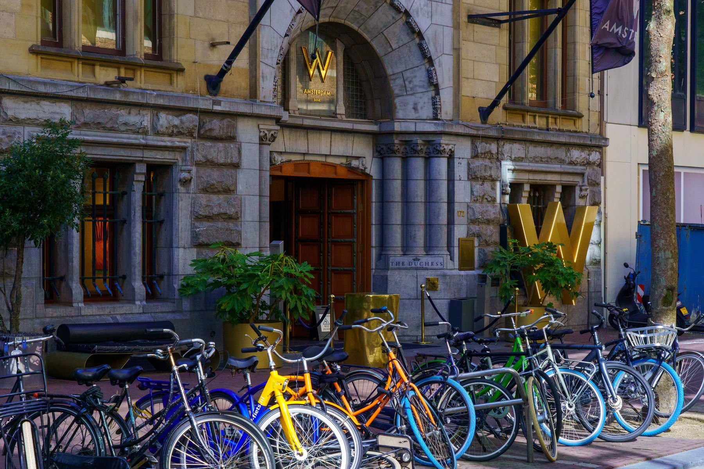
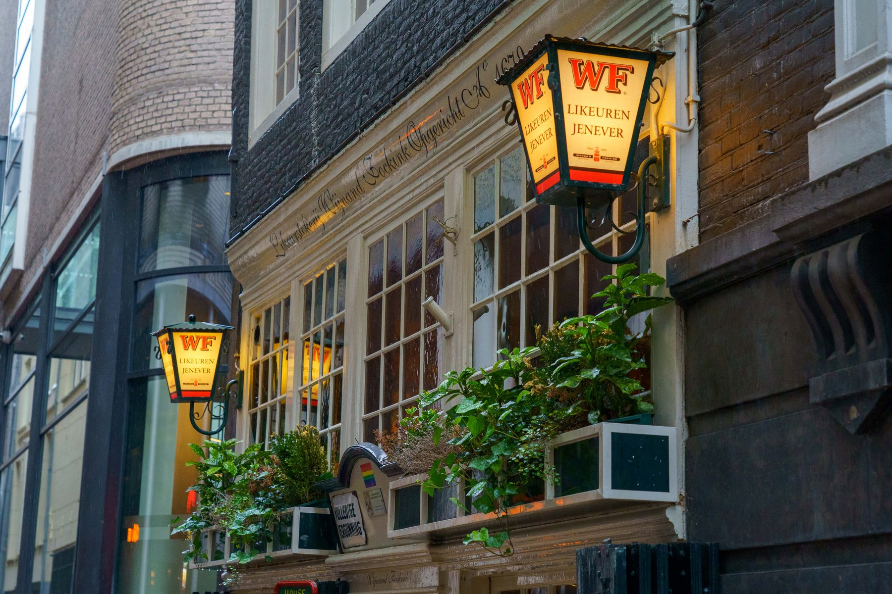
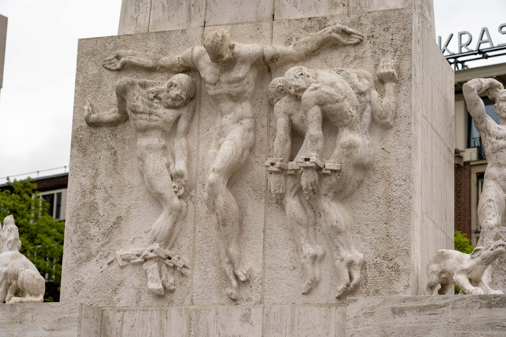
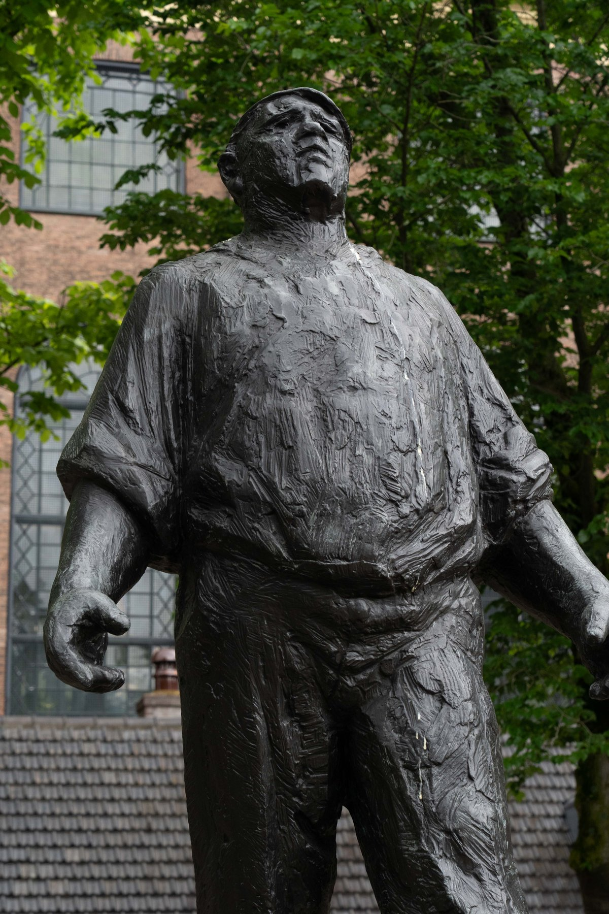
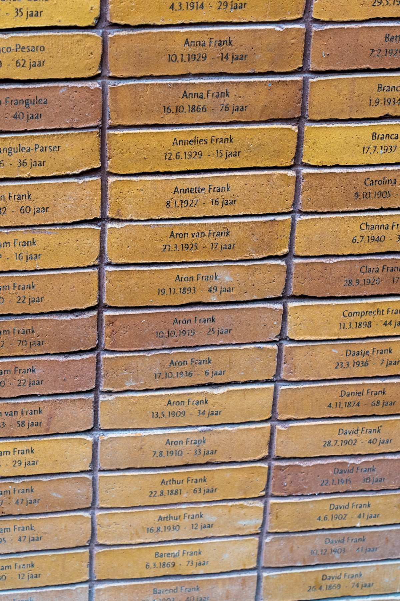
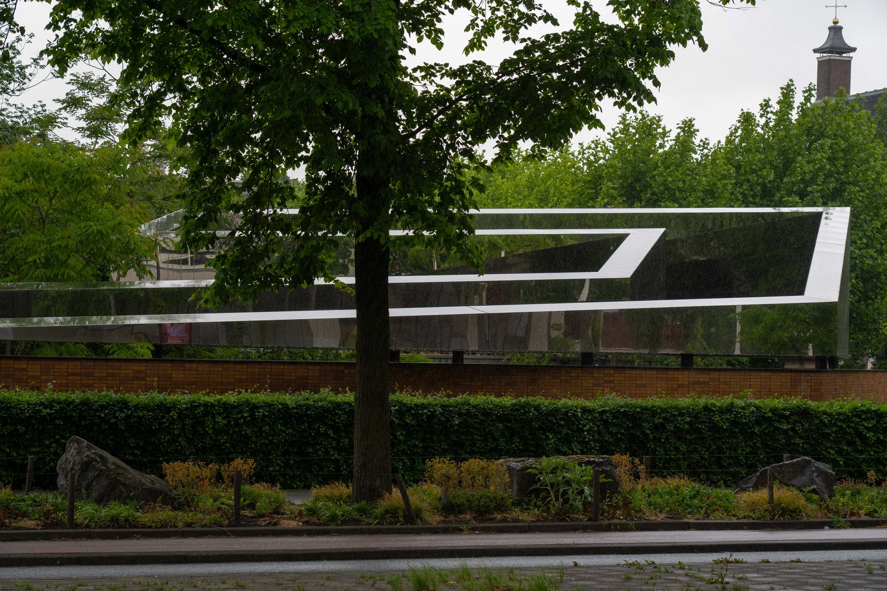
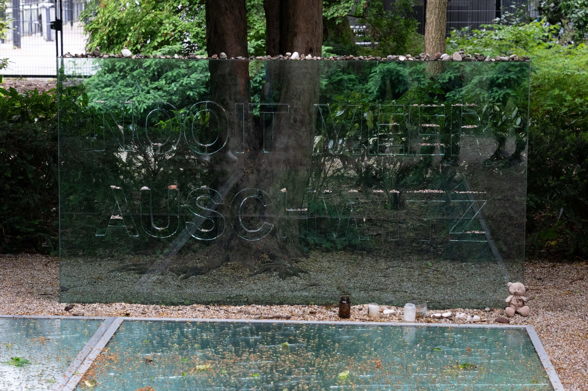
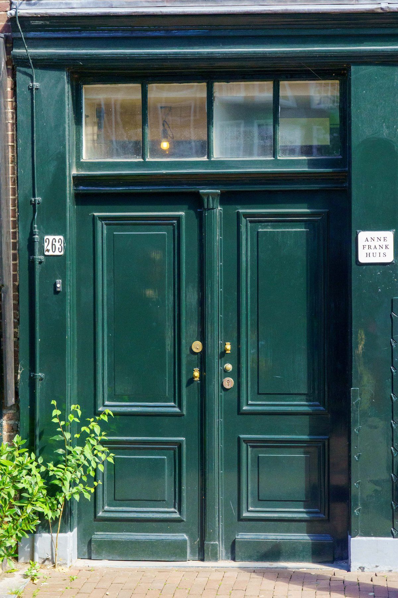
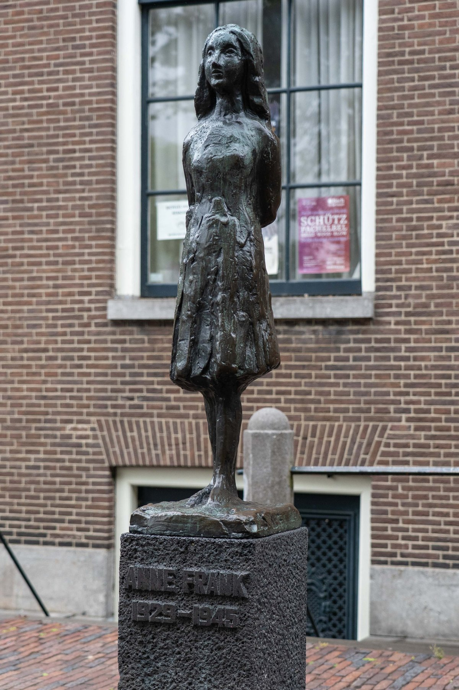
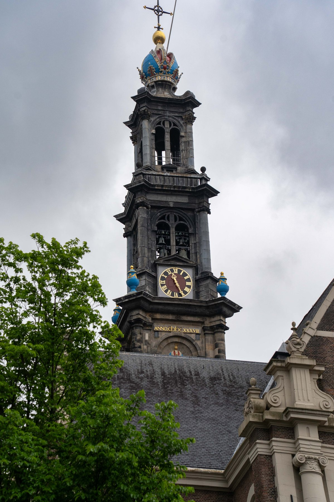
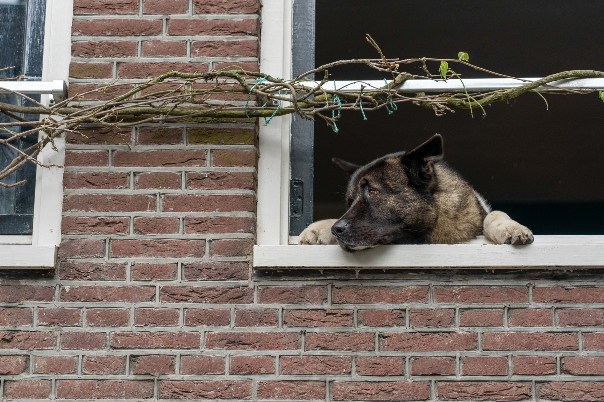
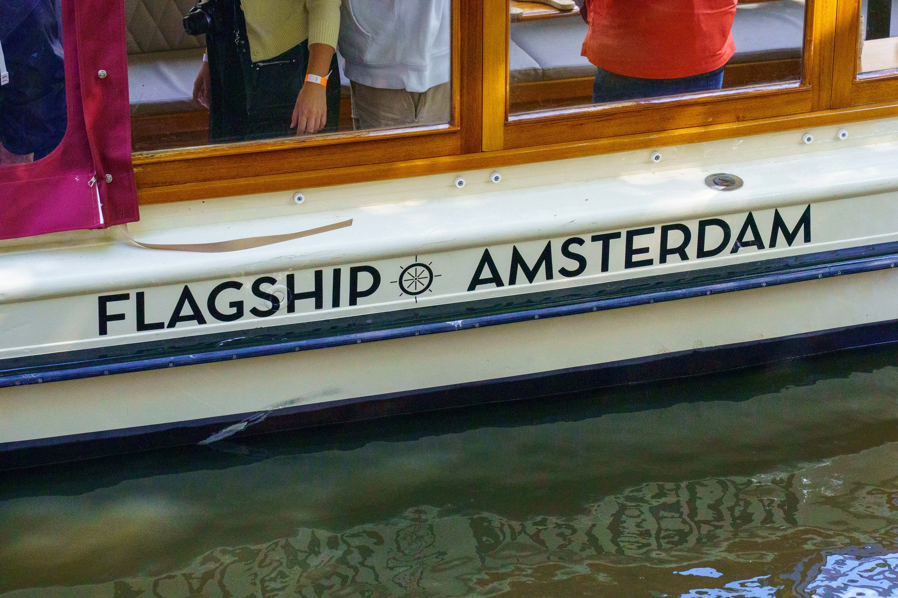
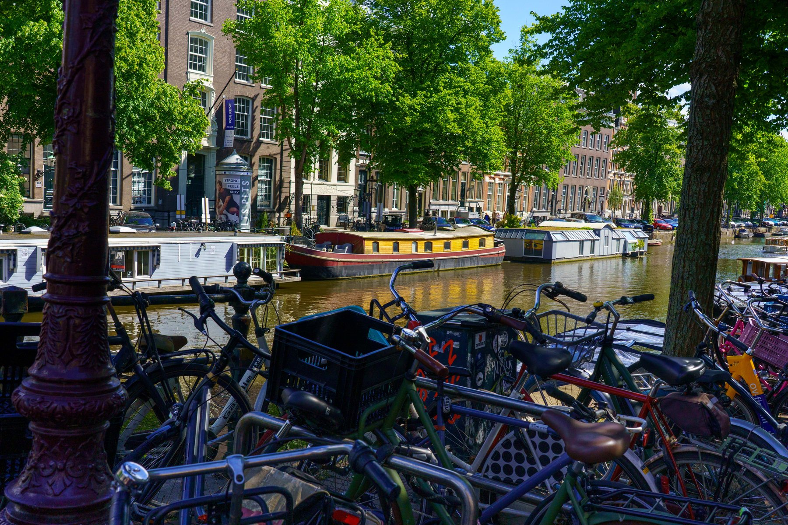
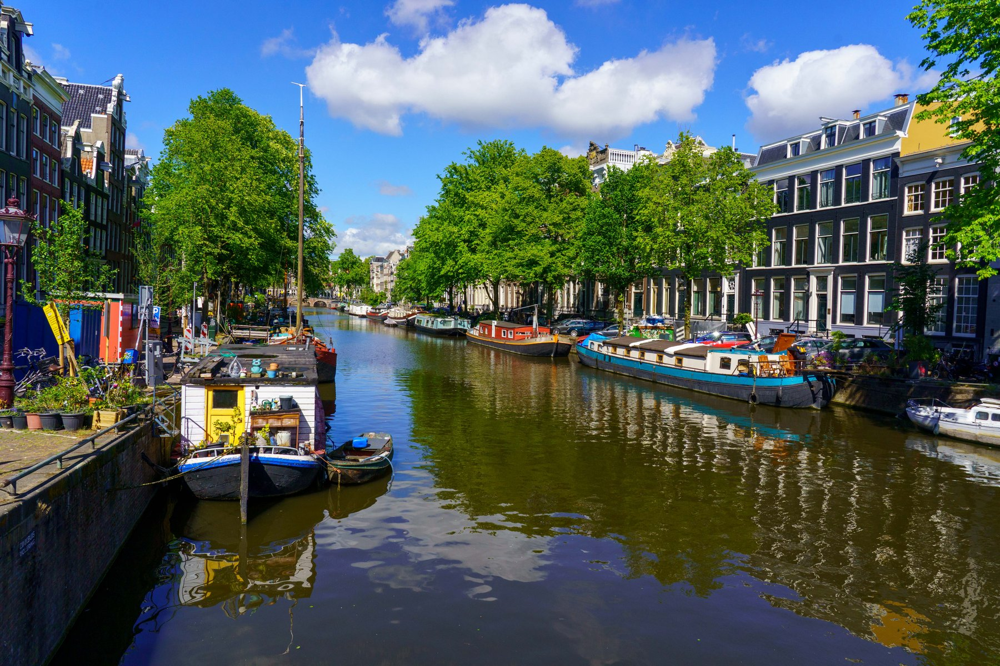
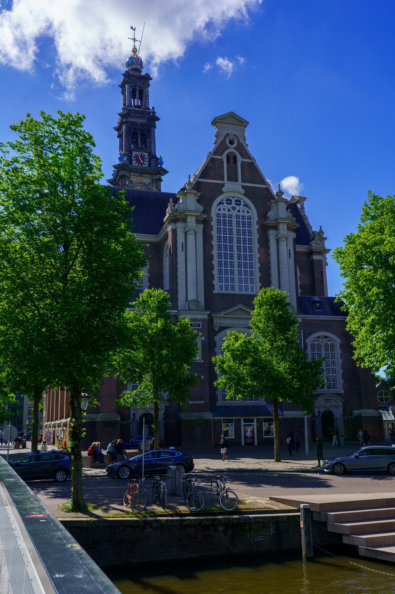